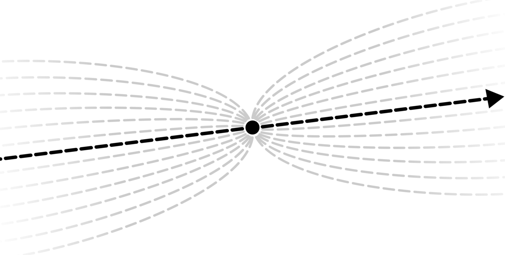

Quickstart
제 1 장
서두
당신은 글 전체를 읽을지 결정하기 위해 앞부분을 훓어보는 사람인가? 땡잡았습니다!
우리는 한 문장, 한 그림, 일천 단어, 그리고 한 에세이로 요약된 스타트업 사회와 네트워크 국가의 개념을 준비했다. 참을성이 없는 편이라면 위의 링크들을 클릭하라. 물론 온전한 경험을 위해서는 한번에 한 페이지씩 읽을 수 있을 것이다.
페이지들에 대해 말하자면, 이 책의 모든 섹션은 온라인이며 개별 웹페이지로 공유할 수 있다. 예를 들어, 이 섹션의 주소는